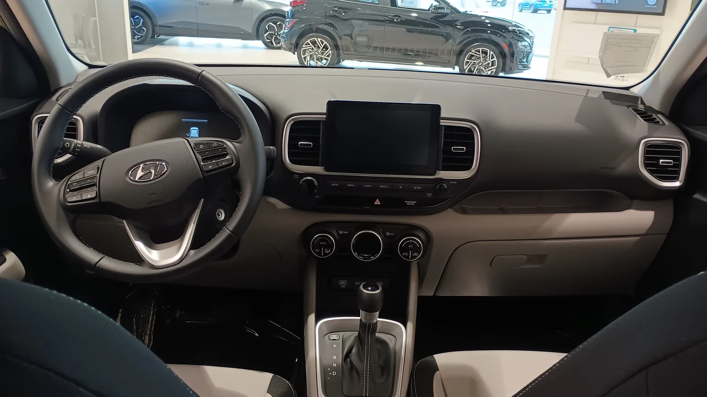
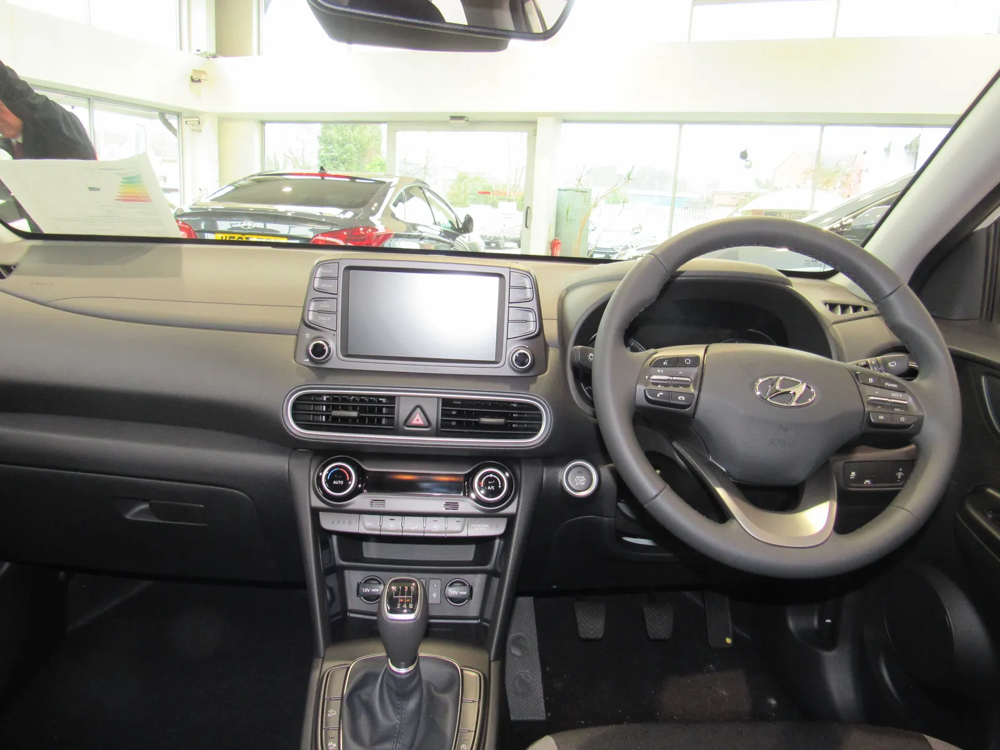
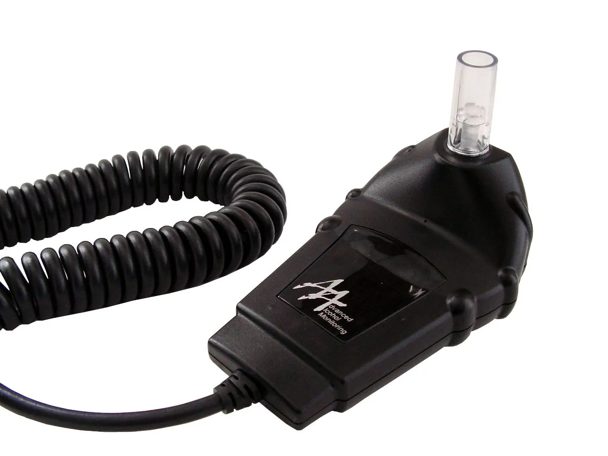
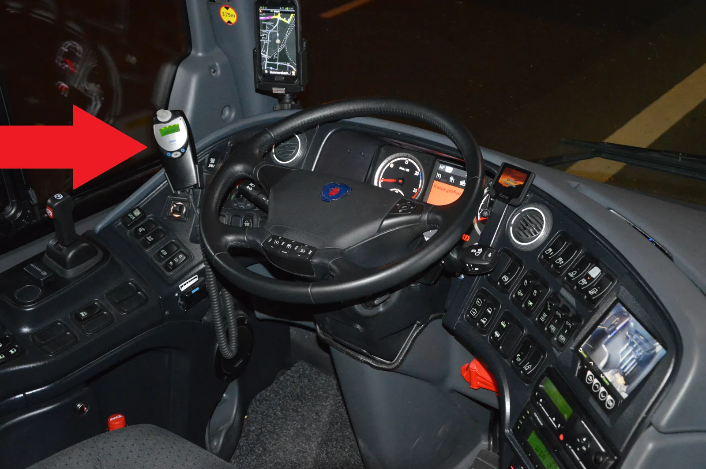

▲ 현대차의 신규 특허는 운전대 하단 스포크 내부에 공기 흡입 팬과 알코올 센서를 숨기는 구조다(사진은 특허와 무관한 베뉴 실내 예시 이미지) ⓒ Deathpallie325, Wikimedia Commons (CC BY-SA 4.0)
동승자에게 대신 불어달라고 하거나, 반려동물의 숨을 이용하는 꼼수. 지금까지 알려진 음주운전 측정기 회피 수법들이다.
현대자동차가 이런 편법을 원천 차단하는 새로운 음주운전 방지 장치 특허를 출원했다는 사실이 알려졌다. 운전대 안에 부품을 모두 숨기고, 안면 인식 카메라로 실시간 감시까지 더한 구조다. 오토헤럴드 보도를 토대로 특허의 작동 원리와 기존 인터록 장치와의 차이를 정리했다.
1. 운전대 속에 팬과 센서를 숨겼다
이번 특허의 핵심은 '숨기는 방식'에 있다. 현대차가 출원한 구조에 따르면, 운전대 하단 스포크 부분에 평소엔 닫혀 있는 여닫이형 플랩이 설치된다. 이 플랩 안쪽에는 공기 흡입 팬과 알코올 센서가 함께 내장돼 있다.
음주 측정이 필요한 시점이 되면 플랩이 열리고, 내부 팬이 운전자의 호흡을 끌어들여 센서로 전달하는 방식으로 알코올 농도를 측정한다. 측정이 끝나면 플랩은 다시 닫혀 평소 운전대 디자인과 다를 바 없는 상태로 돌아간다.
📍 왜 운전대인가
운전자가 항상 손으로 잡고 있고 얼굴과 가장 가까운 위치가 운전대라는 점에 착안한 설계로 풀이된다. 별도의 마우스피스나 튜브를 입에 대는 절차 없이, 평소 운전 자세 그대로 숨을 내쉬는 것만으로 측정이 이뤄지도록 설계됐다.

▲ 특허는 운전대와 시동 버튼 주변 부품을 그대로 활용해 추가 장치의 존재를 최소화하는 방향을 지향한다(사진은 특허와 무관한 코나 실내 예시 이미지) ⓒ Vauxford, Wikimedia Commons (CC BY-SA 4.0)
2. 기존 인터록 장치의 고질적 문제
음주운전 방지 장치, 즉 '알코올 인터록'은 새로운 개념이 아니다. 미국·유럽 일부 지역에서는 음주운전 전력이 있는 운전자에게 법원이 의무적으로 장착을 명령하기도 한다. 문제는 기존 장치들의 사용성이었다.
오토헤럴드 보도에 따르면 기존 인터록 장치는 "대시보드 밖으로 주렁주렁 늘어진 배선과 측정 호스로 실내 미관을 해칠 뿐만 아니라 오염에 취약"했다. 운전자가 직접 튜브를 입에 물고 숨을 불어넣는 방식이 대부분이라, 장치 노출이 불가피했던 셈이다.
| 구분 | 기존 인터록 장치 | 현대차 특허 |
|---|---|---|
| 부품 위치 | 대시보드 외부 노출형 | 운전대 내부 완전 내장 |
| 측정 방식 | 마우스피스·튜브에 직접 숨 불어넣기 | 플랩 개방 후 팬이 호흡 흡입 |
| 오염 문제 | 튜브·호스 위생 관리 필요 | 평소 밀폐 구조로 오염 최소화 |
| 미관 | 실내 인테리어 훼손 | 운전대 디자인 그대로 유지 |
| 대리 측정 방지 | 별도 장치 없음(취약) | 안면 인식 카메라로 실시간 감시 |
실제로 국내외에서는 배우자나 동승자가 대신 숨을 불어 시동을 걸어주거나, 심지어 반려견을 이용해 인터록을 속이려 한 사례가 보도된 바 있다. 현대차의 특허는 이런 허점을 정면으로 겨냥한다.

▲ 기존 인터록 장치는 이처럼 운전자가 직접 입에 대고 숨을 불어넣는 마우스피스 구조가 대부분이었다 ⓒ Rsheram, Wikimedia Commons (CC BY-SA 3.0)
3. 안면 인식과 주행 패턴까지 감시한다
측정 한 번으로 끝나지 않는다는 점도 특징이다. 오토헤럴드에 따르면 이 장치는 안면 인식 카메라와 연동해 운전석 탑승자의 얼굴 변화를 실시간 감시한다. 측정 시점과 실제 운전자의 얼굴이 일치하는지를 계속 대조하는 구조로, 동승자가 대신 측정한 뒤 운전자와 자리를 바꾸는 수법을 차단하기 위한 장치로 풀이된다.
✅ 특허가 막으려는 대표적인 편법들
· 동승자가 대신 숨을 불어넣고 운전자와 자리를 바꾸는 수법
· 반려동물의 호흡을 이용해 알코올 미검출로 위장하는 수법
· 시동 직후 측정만 통과하고 이후 음주 상태로 주행하는 수법
시동을 건 이후에도 감시는 이어진다. 주행 중 차선을 벗어나거나 흔들리는 등 부주의 운전 패턴이 감지되면 추가 측정을 요구하는 기능도 특허에 포함됐다. 최초 1회 측정만 통과하면 그만인 기존 인터록의 한계를 보완한 셈이다.

▲ 기존 알코올 인터록은 이처럼 별도 기기를 계기판 주변(화살표 표시)에 부착하고 케이블로 연결하는 방식이 일반적이다 ⓒ Spielvogel, Wikimedia Commons (CC0)
4. 왜 지금, 이런 특허가 나왔나
음주운전 방지 기술에 대한 관심은 국내외에서 꾸준히 커지고 있다. 미국에서는 2021년 인프라 법안(Infrastructure Investment and Jobs Act)에 신차에 음주운전 감지·방지 기술 탑재를 의무화하는 조항이 담기며 완성차 업체들의 관련 기술 개발이 속도를 내는 계기가 됐다.
📍 완성차 업계의 공통 과제
다만 규제가 요구하는 수준의 기술을 실제 양산차에 자연스럽게 녹여내는 것은 또 다른 문제다. 운전자 편의를 해치지 않으면서도 신뢰도 높은 측정이 가능해야 하고, 원가 부담도 무시할 수 없다. 현대차의 이번 특허가 운전대라는 기존 부품 안에 기능을 압축하려 한 것도 이런 현실적 제약과 무관하지 않아 보인다.
다른 완성차·부품업체들도 심박수·발한 감지, 시선 추적 등 다양한 방식의 음주·졸음 감지 기술을 특허로 출원해왔다. 현대차의 이번 특허는 그중에서도 기존 인터록의 가장 큰 약점이었던 '미관'과 '위생', '대리 측정'을 한 번에 겨냥했다는 점에서 주목받고 있다.
5. 특허 이후, 실제 적용은 언제쯤
다만 짚어야 할 부분이 있다. 오토헤럴드 보도는 특허 출원 사실을 전하는 데 집중했고, 어떤 차종에 언제 실제로 적용될지는 구체적으로 언급하지 않았다. 특허 출원과 양산 적용 사이에는 통상 상당한 시간차가 존재하며, 특허로 출원된 기술이 실제 상품화 없이 사장되는 경우도 드물지 않다.
✅ 앞으로 지켜볼 지점
· 실제 시제품 존재 여부 — 특허 도면 수준인지, 시험 차량에 탑재된 상태인지
· 적용 차종·시기 — 신차 전용 사양인지, 기존 차량에도 소급 적용 가능한 구조인지
· 규제와의 연동 — 국내외 음주운전 방지 장치 의무화 규제 일정과 맞물려 상용화 속도가 결정될 가능성
특허 관련 원문 기사는 오토헤럴드에서 확인할 수 있다. 오토헤럴드 원문 바로가기
6. 요약
현대차가 운전대 하단 스포크에 공기 흡입 팬과 알코올 센서를 내장하고, 안면 인식 카메라로 대리 측정까지 차단하는 음주운전 방지 장치 특허를 출원했다. 기존 인터록 장치가 안고 있던 배선 노출, 오염, 대리 측정 취약성 등의 문제를 함께 겨냥한 구조다.
시동 후에도 부주의 운전이 감지되면 추가 측정을 요구하는 등 1회성 측정의 한계를 보완한 점도 특징이다. 다만 이는 아직 특허 출원 단계이며, 실제 양산 차종과 적용 시기는 공개되지 않았다.
미국 등에서 음주운전 감지·방지 기술 탑재를 의무화하는 규제가 강화되는 흐름 속에서, 완성차 업체들의 관련 특허·기술 경쟁은 앞으로도 계속될 전망이다.